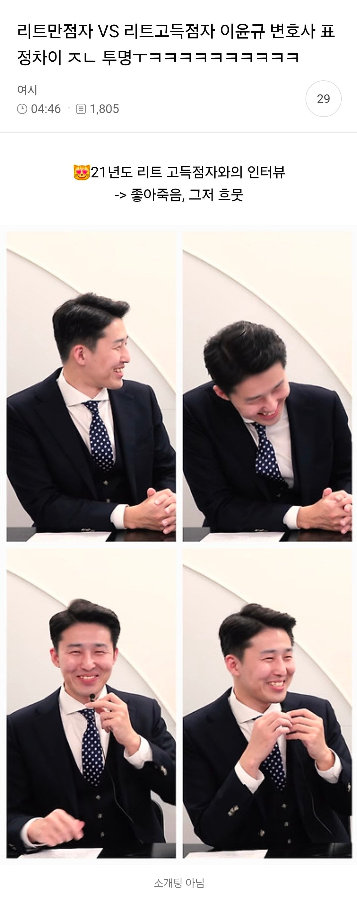

81 · 19 · 1 시간 전 · 원문

수집 당시 댓글 5개
ffmage · 4 일 전
나 공부 1도 몰랐는데 저 변호사아재 공부법 보고 도움좀 봤는데 역시 공부도 짬이 있는지 노하우가 있더라
Poipoi · 4 일 전
영상보면 리트냥이는 나중에 취조하더만ㅋㅋㅋ
닉볼때마다케겔운동 · 4 일 전
사실 대화해보면 알지..
그 학문의 구체적인 요소는 개개인마다 다를지몰라도
큰 맥락은 그 학문을 공부하는 사람들끼리 일치하는 영역이 상당히 있을텐데
특히 리트같이 읽고 분석하고 판단하는 학문은 더더욱이 알겠지
치자나라피킨공주 · 4 일 전
글쎄 그런 게 있을라나
미라클러 · 4 일 전
마지막은 ai아님?


나 공부 1도 몰랐는데 저 변호사아재 공부법 보고 도움좀 봤는데 역시 공부도 짬이 있는지 노하우가 있더라